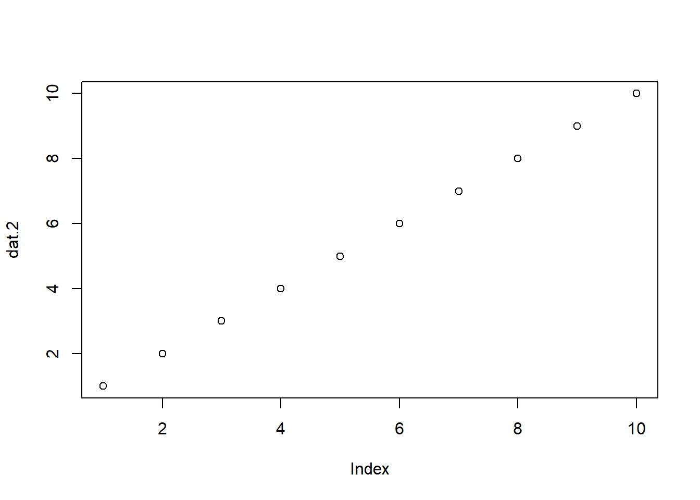
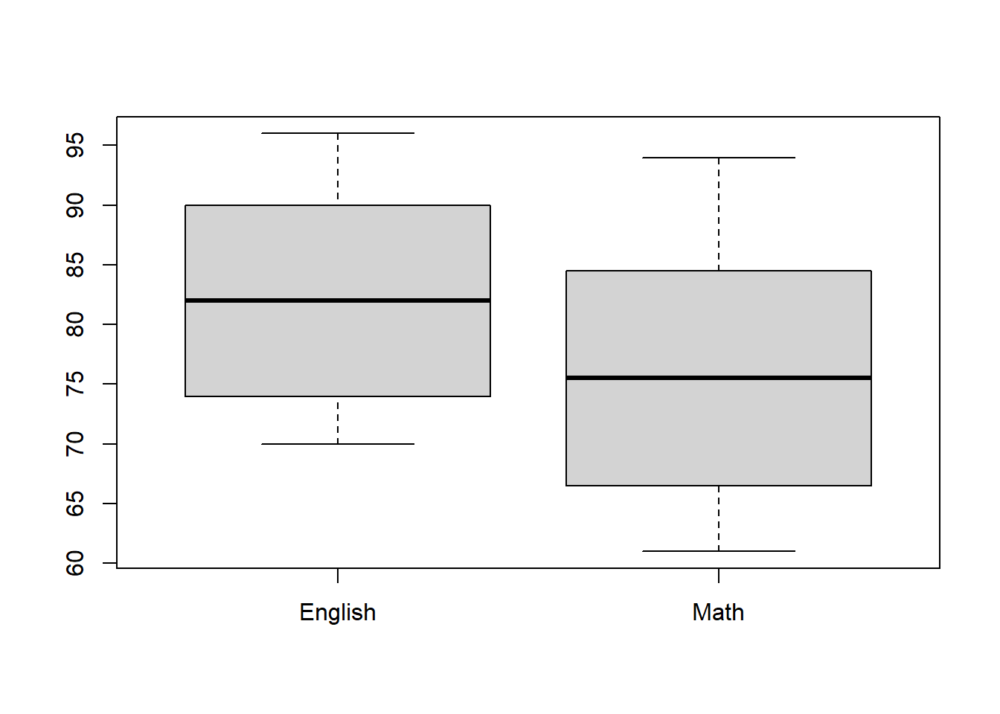

Chapter 6 ここにGifを入れられたら最高
6.0.1 有意性検定（≒ 統計的検定）の問題点
有意確率（ p < 0.05）だけに結果を頼るのはよくない
無作為抽出を前提としていても、必ず得られた結果に誤差が含まれている
標本サイズに大きく左右される
統計的検定における誤差と問題点の対処法
- できるだけ母集団を代表するサンプルを得る
- 信頼区間を報告する
- 検定力分析で標本サイズを事前に決める
- 効果量を報告する
言語研究における効果量は、Neyman-Pearson流の理論に基づく。
6.0.2 頻度論的統計学とベイズ統計学
ここまで説明してきた話 + この講義のほとんどの説明における統計学は、頻度論的統計学（frequentist statistics）と呼ばれる枠組み。
検定において用いる数学的手法が異なる。頻度 vs. ベイズのような「主義の違いによる対立構造」は避けた方がよい
母集団からサンプリングする（標本を抽出する）のは繰り返すことができる試行において起こる事象の相対頻度（frequency）をもとに行われる。例えば、サイコロを14回降って、1の目が3回出た場合、1が出る確率は になる。これを頻度論的確率と呼び、人間の主観や信念に依存しない客観的な確率である。
確率とは無限回試行を行ったときの割合
仮説の評価を p 値を用いて行う
- 「帰無仮説のもとでデータが得られる確率」を計算する
データを追加して再度分析する際、、適切な方法を用いないと、計算されたp 値と有意水準が当初の値から変わってしまう（検定力分析が重要な理由）
ベイズ統計学では、主観確率（「明日は30%で晴れるだろう」）と客観確率（「10日3日晴れたから明日は晴れるだろう」）の両方を検定に使用する。
ベイズ統計学では p 値は使わない
ベイズ統計では、データを追加して再度分析することはOK（データの二度漬けをしない限り）
頻度論的統計学、ベイズ統計学どちらにおいても、「無作為抽出により標本が母集団を代表している」「母集団からのサンプリングを近似していること」という前提が重要
- ベイズ統計学の方が道具的に使いやすいと考えることもできる
6.1 ハンズオンセッション
6.1.3 t検定を使用する前提
- データの種類：間隔尺度または比例尺度
- サンプリング：母集団から無作為抽出され、母集団を十分代表していること
- 正規性：標本平均の分布が正規分布に従うこと。少々外れている場合は正規性に対して頑健であるためOK。大きく外れている場合はノンパラメトリック版のt検定を行う
- （対応なしの場合のみ）等分散性：比較する2群のデータの分散が等しいこと（= 母分散が等しい集団からデータがサンプリングされていること）。t検定は母分散の等質性に関しても頑健であるため、グループのサンプルサイズが等しい場合、分析結果が歪むことはほとんどない。
- 等分散性はルビーンの検定で検証する。有意な結果が得られた場合は、「等分散性を仮定しない」ウェルチの方法やコクラン・コックスの方法で調整する。
- （対応なしの場合のみ）観測値の独立性：データがお互いに影響し合い相関が高い場合、第一種の過誤が起こりやすくなる
6.1.4 t 値の算出
標本平均の標本誤差：差がどれだけ偶然の誤差によって起きるかを推定
偶然起こる誤差おりどの程度大きいかを調べる検定
\[t\ =\ \frac{観測された標本平均の差}{標本平均の差の標準誤差}\]
6.1.4.1 対応なし t 検定（サンプルサイズが等しい）
\[ t = \frac{\bar{x}_1 - \bar{x}_2}{\sqrt{\frac{S_1^2}{n_1} + \frac{S_2^2}{n_2}}} \] \[ (df = n_1 + n_2 - 2) \]
6.1.5 Rでの実装
6.1.5.1 対応なし t 検定
- データの読み込み
## ID Class English
## 1 1 A 85
## 2 2 A 78
## 3 3 A 90
## 4 4 A 82
## 5 5 A 88
## 6 6 A 84## [1] 80
##
## Descriptive statistics by group
## group: A
## vars n mean sd median trimmed mad min max
## X1 1 40 83.03 4.3 83 83 5.93 76 90
## range skew kurtosis se
## X1 14 0.01 -1.25 0.68
## ----------------------------------------
## group: B
## vars n mean sd median trimmed mad min max
## X1 1 40 60.48 5.73 60 60.44 7.41 50 70
## range skew kurtosis se
## X1 20 0.05 -1.25 0.91- Rでは特に指定を行わない場合、「等分散を仮定しない」ウェルチの方法による t 検定が行われる。よって、Rで t 検定を行う場合、この検定を行う必要はない。
##
## F test to compare two variances
##
## data: English by Class
## F = 0.56327, num df = 39, denom df = 39,
## p-value = 0.07691
## alternative hypothesis: true ratio of variances is not equal to 1
## 95 percent confidence interval:
## 0.2979146 1.0649904
## sample estimates:
## ratio of variances
## 0.5632727##
## Welch Two Sample t-test
##
## data: English by Class
## t = 19.911, df = 72.353, p-value <
## 0.00000000000000022
## alternative hypothesis: true difference in means between group A and group B is not equal to 0
## 95 percent confidence interval:
## 20.2925 24.8075
## sample estimates:
## mean in group A mean in group B
## 83.025 60.475論文記載例
* 本来であれば、効果量も報告する必要があるが、今回は省略している。
異なる指導法を実施したクラス A とクラス B の英語テストの平均点は、83.03 (SD = 4.3)と 60.48 (SD = 5.73 でクラス A の平均の方が高かった。 t 検定を使って比較した結果、t(72.353) = 19.911, p < .001、 d = xxx [95%CI = xxx, xxx] で、クラスAのほうが統計的に有意に英語テストの成績が高いことがわかった。
- p 値は原則実数値報告である（ p = .046）。しかし、値が0.01よりも小さい場合は、p < .001のように報告する。
6.1.5.2 対応あり
- データの読み込み
## ID English Math
## 1 1 85 78
## 2 2 88 82
## 3 3 90 85
## 4 4 92 89
## 5 5 87 83
## 6 6 91 86## [1] 40
## vars n mean sd median trimmed mad min max
## X1 1 40 82.22 8.65 82 82.16 11.86 70 96
## range skew kurtosis se
## X1 26 0.04 -1.67 1.37## vars n mean sd median trimmed mad min max
## X1 1 40 75.85 10.02 75.5 75.56 13.34 61 94
## range skew kurtosis se
## X1 33 0.15 -1.47 1.59paired = Tを設定する
##
## Paired t-test
##
## data: dat_t_rep$English and dat_t_rep$Math
## t = 21.641, df = 39, p-value <
## 0.00000000000000022
## alternative hypothesis: true mean difference is not equal to 0
## 95 percent confidence interval:
## 5.779151 6.970849
## sample estimates:
## mean difference
## 6.375論文記載例
* 本来であれば、効果量も報告する必要があるが、今回は省略している。
- Aクラスの40名の学生を対象に、英語と数学のテストの得点を比較した。英語の平均点は、82.22 (SD = 8.65)と 75.85 (SD = 10.02)で英語の平均の方が高かった。対応ありの t 検定を使って比較した結果、t(39) = 21.641, p < .001、 d = xxx [95%CI = xxx, xxx] で、英語のほうが統計的に有意に得点が高いことがわかった。
6.2 次週までの課題
6.2.1 課題内容
小テストに向けて今回の内容を復習する。必ず手でコードを入力してRを実行する。
あなたには高校生の弟がいます（平均までは知っているが分散は知らない）。ポケモンが大好きな弟から以下の質問が来たとする。この答えを具体的な数値や図を基に回答してください。R Markdownファイルで作成し、HTMLファイルに変換しそれを提出してください。
「全ポケモンのHPの平均って大体どれくらい？」
「その平均ってどれくらい正確なの（どれくらいの幅があるの）？」
「ポケモンのステータスってどれくらいの値が一番多いの？」
Rで数値を出力するだけでなく、それぞれの質問への回答を高校生にもわかりやすく文字で記載してください。
6.3 参考文献
- 心理学統計法 放送大学
- https://www.isc.meiji.ac.jp/~hirukawa/randomevent/test1.htm
- 中村 心理学・教育学研究のための効果量入門
- 平井 et al.
- 心理学統計の基礎
- https://www.note.kanekoshobo.co.jp/n/nf836d37b7f10#61a8e679-85a4-411c-96dd-5a1a37335572
- https://x.com/genkuroki/status/1227224899875295234
- https://norimune.net/3339
- https://statmodeling.stat.columbia.edu/2024/01/08/bayesians-are-frequentists-2/